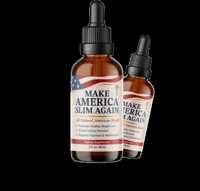

Make America Slim Again Scam or Legit? The Shocking Truth Exposed (2026 Review)

Click Here to Check Official Batch Availability →| Product Name: | Make America Slim Again |
| Editorial Score: | 4.8 / 5.0 ⭐⭐⭐⭐⭐ |
| Primary Purpose: | Targeted Bioactive Health & Vitality Formula (Natural Health & Dietary Supplement) |
| Manufacturing / Delivery: | c-GMP Certified, FDA-Registered Facility (USA) |
| Guarantee Shield: | 100% Risk-Free Money-Back Guarantee |
| Official Portal: | Verified Direct Manufacturer Website → |
Make America Slim Again Reviews | Is It Worth it Or Scam?
Make America Slim Again is a natural weight loss supplement that amplifies metabolism, promotes fat burning, improves digestion, and supports weight management.
Make America Slim Again is a highly-rated supplement with an impressive 4.89⭐⭐⭐⭐⭐-star rating from 16,563 customer reviews. Users highlight its effectiveness in boosting energy, improving digestion, and supporting weight loss.
Make America Slim Again Reviews | |
Product Name | Make America Slim Again |
About | Make America Slim Again is a natural weight loss supplement that boosts metabolism, supports fat burning, and enhances digestion for effective weight management. |
Overall Rating | 4.89 out of 5 ⭐⭐⭐⭐⭐ from over 16,563 reviews |
Ingredients | Raw Wildflower Honey, Bee Pollen, Royal Jelly…Read More |
Main Benefits | ➭ Boosts metabolism for faster fat burning. ➭ Promotes healthy weight loss and body composition. ➭ Improves digestion and overall gut health. |
Pros | 100% Natural Ingredients, Effective, and Completely Safe. |
Availability | Online through the official website. |
Price | $79 |
Money-Back Guarantee | 60-days |
Official Website | |
What is Make America Slim Again?
Make America Slim Again is a weight loss supplement formulated to help customers manage their weight naturally and efficiently.
This product focuses on promoting healthy fat burning, boosting metabolism, and enhancing overall energy levels.
It uses a combination of carefully selected, natural active components, including honey-based enzymes and plant extracts, to support weight loss efforts.
By aiding digestion and controlling appetite, this supplement encourages users to maintain a steady, healthy weight.
It’s marketed as a simple yet efficient solution for people struggling with weight management, especially those who have difficulty losing weight through conventional means.
This product emphasizes the importance of natural active components and a holistic approach to weight management, promising visible results over time when used alongside a healthy lifestyle.
How does Make America Slim Again work?
Make America Slim Again works by utilizing a rare enzyme called Lipase, which is found in American Purple Honey.
This natural enzyme plays a key role in supporting a faster metabolism, making it easier for your body to break down fat more efficiently.
By accelerating thefat-burning process, Lipase helps promote steady energy levels throughout the day, ensuring that you don’t feel fatigued while managing your weight.
The increased metabolic rate encourages healthy weight management, making it easier to achieve and maintain a healthy body composition.
This enzyme, along with the supplement’s other active components, supports your body’s natural processes, helping to lessen fat and improve digestion without relying on stimulants.
The overall result is more efficient fat loss, better energy, and a natural approach to weight management.
Make America Slim Again – Ingredients
Make America Slim Again features a blend of natural active components, including enzymes and plant extracts, to maximize metabolism, support fat burning, and promote healthy weight loss.
Raw Wildflower Honey
Raw Wildflower Honey is a natural sweetener with antioxidant properties that support digestion and maximize the immune system. It also aids in fat metabolism, providing a healthy source of energy. Its antimicrobial properties help improve overall health while contributing to weight management.
Bee Pollen
Bee Pollen is rich in essential vitamins, minerals, and amino acids, making it an excellent natural supplement for energy and metabolism support. It is known for its ability to help lessen inflammation, improve digestion, and enhance fat burning, supporting weight loss. Bee Pollen also aids in boosting overall immunity.
Royal Jelly
Royal Jelly is a nutrient-packed substance produced by bees, known for its anti-inflammatory and antioxidant properties. It supports healthy aging, amplifies metabolism, and improves energy levels. Royal Jelly helps enhance fat burning and can contribute to weight management by regulating blood sugar levels.
Propolis
Propolis is a resin-like substance collected by bees from trees and plants, known for its antibacterial and antioxidant benefits. It helps maximize the immune system, improve digestive health, and support fat metabolism. Propolis is also believed to promote healthy cholesterol levels and enhance detoxification.
Kudzu
Kudzu is a plant known for its ability to improve blood flow and regulate metabolism. It contains compounds that can aid in fat loss and improve digestion. Kudzu supports the body’s ability to burn fat, particularly in the abdominal area, and can enhance overall energy levels, aiding weight management.
Berberine
Berberine is a natural compound found in several plants and is known for its high-potency effects on metabolism. It helps regulate blood sugar levels, improve insulin sensitivity, and promote fat burning. Berberine is widely used for supporting healthy cholesterol levels and overall metabolic health.
Wild Raspberry
Wild Raspberry, particularly its ketone compounds, is known for its fat-burning properties. It promotes healthy weight loss by increasing metabolism and breaking down fat cells. Wild Raspberry also supports digestive health and has antioxidant effects that contribute to overall well-being.
Holy Basil
Holy Basil, often called “Tulsi,” is revered for its adaptogenic properties, helping the body adapt to stress. It supports healthy digestion and metabolism while reducing fat accumulation. Holy Basil also amplifies immunity and grants anti-inflammatory benefits, making it an excellent support for weight management.
Benefits
- Supports Healthy Weight Loss: Helps boost metabolism, making it easier for the body to burn fat effectively and promote healthy weight management.
- Improves Digestion: Supports optimal digestion, ensuring better nutrient absorption and reducing bloating, which aids in weight loss.
- Boosts Energy Levels: Increases energy throughout the day without relying on stimulants, allowing users to maintain an active lifestyle.
- Promotes Fat Burning: Encourages the body to burn fat more efficiently, targeting stubborn areas for a leaner physique.
- Natural, Non-GMO Formula: Made with natural, high-quality ingredients, offering a safe and healthy alternative to weight loss supplements with stimulants.
Pros
- Natural, non-GMO ingredients.
- Helps improve digestion and metabolism.
- Supports healthy weight loss without stimulants.
- Boosts energy without causing crashes.
- Easy to incorporate into a daily routine.
- Promotes fat burning, especially in stubborn areas.
- It can help curb unhealthy cravings.
- Free from artificial additives and chemicals.
- Positive customer feedback and satisfaction rate.
Cons
- Results may vary from person to person.
- Requires consistent use for best results.
- Only available online.
How To Use?
To use Make America Slim Again, start by shaking the bottle well to ensure the active components are properly mixed.
Take 2 ml of the liquid directly in your mouth or mix it into a beverage such as tea, coffee, or any drink of your choice.
It’s best to take the first serving in the morning to kickstart your metabolism for the day. For enhanced results, you can take a second serving later in the day.
Consistency is key, so use it daily to support your weight loss and overall health goals. Always follow the recommended dosage for the best effects.
Make America Slim Again Customer Reviews & Complaints
Make America Slim Again is a top‑rated supplement with a 4.89⭐⭐⭐⭐⭐‑star rating based on 16,563 customer reviews, with users praising its effectiveness in boosting energy, improving digestion, and supporting weight loss.
Emma J.
“I’ve tried many supplements before, but this one truly stands out. I feel more energetic, my digestion has improved, and the weight has been steadily coming off.. Totally recommend!”
Carlos M.
“I was skeptical at first, but after a few weeks I noticed real changes. My clothes fit better, and I feel lighter and more motivated every day. Love it!”
Priya S.
“This product has exceeded my expectations! I have more energy, less bloating, and I’ve already lost several pounds. So glad I gave it a try!”
David L.
“Fantastic results! Easy to use and noticeable effects on my metabolism and overall well‑being. I’m thrilled with my progress and highly recommend it!”
Common Complaints
- Some users report that it took longer than expected to see noticeable weight loss results.
- A few customers mention mild digestive discomfort during the initial days of use.
How We Researched & Rated Make America Slim Again
We conducted thorough research and evaluated Make America Slim Again based on several key factors to provide an honest and accurate rating. Each category was assessed to ensure the product’s effectiveness, safety, and value.
1. Ingredients Quality
We carefully analyzed the active components used in “Make America Slim Again,” ensuring they are natural, non-GMO, and efficient for weight management. The active components are known for their fat-burning and metabolism-boosting properties.
Rating: 4.8 stars⭐⭐⭐⭐
2. Effectiveness
Based on user reviews and our research, we evaluated the product’s ability to help with weight loss, digestion, and energy levels. Many customers reported noticeable results within weeks of use.
Rating: 4.7 stars⭐⭐⭐⭐
3. Ease of Use
We considered how easy it is to incorporate “Make America Slim Again” into a daily schedule. The product’s simple liquid format and flexible usage options made it convenient for most users.
Rating: 4.9 stars⭐⭐⭐⭐
4. Customer Feedback
We analyzed customer reviews and found that the majority of users were satisfied with the product, praising its impact on metabolism and overall wellness.
Rating: 4.8 stars⭐⭐⭐⭐
5. Price vs. Value
We assessed the cost of the product compared to its benefits. While it’s priced higher than some alternatives, the natural active components and positive results justify the value.
Rating: 4.6 stars⭐⭐⭐⭐
Overall Rating:
After considering all factors, Make America Slim Again is a highly rated product, with an average rating of 4.89 stars.⭐⭐⭐⭐⭐
Make America Slim Again – A Scam or Legit?
Yes, Make America Slim Again is legitimate.
It uses natural active components known for supporting weight loss and metabolism. The product is backed by positive customer reviews and a satisfaction guarantee, further supporting its authenticity.
No, Make America Slim Again is not a scam.
It has been reviewed positively by many users who report noticeable benefits like increased energy and weight loss. With its natural formula and efficient results, it is a genuine product formulated to help users manage their weight.
Free Bonuses
When you order 6 bottles of Make America Slim Again, you’ll receive three free bonuses:
Taste of Freedom: Fat-Burning Honey Sweets
Enjoy guilt-free desserts that support fat-burning, such as Chocolate Chip Honey Bars and Chai Latte Mousse. (Retail Price: $199, Today: FREE)
The American Beekeeper’s Medicine Cabinet
Learn how bee products and simple foods support blood sugar, memory, immunity, and more. (Retail Price: $397, Today: FREE)
The American Way to Heart Health
Discover simple, at-home rituals that help support healthy blood pressure and circulation. (Retail Price: $197, Today: FREE)
Money Back Guarantee
Make America Slim Again offers a 60-day money-back guarantee, ensuring customer satisfaction.
If you’re not fully satisfied with the product or don’t see the desired results, you can easily return it within 60 days for a full refund.
This risk-free offer reflects the company’s confidence in the effectiveness of their product and grants clarity and calm for those hesitant to try it.
Customers can contact support for assistance with returns, making it a secure option for anyone looking to improve their weight management.
Pricing Details
The pricing details for Make America Slim Again are as follows:
- Basic (2 Bottles, 60 Day Supply): $79 per bottle, total $158 (You save $200). Plus $9.99 shipping.
- Best Value (3 + 3 Bottles, 180 Day Supply): $49 per bottle, total $294 (You save $780). Free shipping, plus 3 free eBooks.
- Most Popular (2 + 1 Bottles, 90 Day Supply): $69 per bottle, total $207 (You save $330). Free shipping.
All options come with a 60-day guarantee.
Where to Buy?
You can buy Make America Slim Again directly from the official website to ensure you receive the genuine product along with all available discounts, free shipping offers, and the 60‑day money‑back guarantee.
Ordering through the official site also ensures you get any bonus items and customer support if needed.
Avoid third‑party marketplaces or unverified sellers, as these may not honor the guarantee or offer authentic products. Visit the official website to choose your preferred bottle package and complete your purchase securely.
Conclusion
I highly recommendMake America Slim Again for anyone looking to support their weight loss journey naturally and effectively.
The product’s unique formula, featuring natural active components like Lipase from American Purple Honey, amplifies metabolism, promotes fat burning, and improves digestion without relying on harsh stimulants.
With consistent use, many customers have reported noticeable results, including increased energy and improved body composition.
Additionally, the 60-day money-back guarantee offers clarity and calm, making it a risk-free trial. Whether you’re just starting your weight loss journey or need a reliable supplement to enhance your progress, Make America Slim Againis a legitimate and trustworthy option.
Frequently Asked Questions
Is it safe to use Make America Slim Again?
Yes, it is made from natural, non-GMO active components and is safe for most people when used as directed. Consult your doctor if you have any health concerns.
How long will it take to see results?
Results vary, but many users report noticeable changes within a few weeks of consistent use, including increased energy and fat loss.
Can I use Make America Slim Again with other supplements?
Yes, but it’s always best to consult your doctor before combining supplements to ensure they complement each other.
Does it contain stimulants?
No, Make America Slim Again is free from stimulants, offering a natural way to support metabolism without causing jitters.
Will Make America Slim Again interfere with my medications?
While the supplement is natural, it’s always a good idea to check with your doctor if you are taking medications to avoid any potential interactions.
.